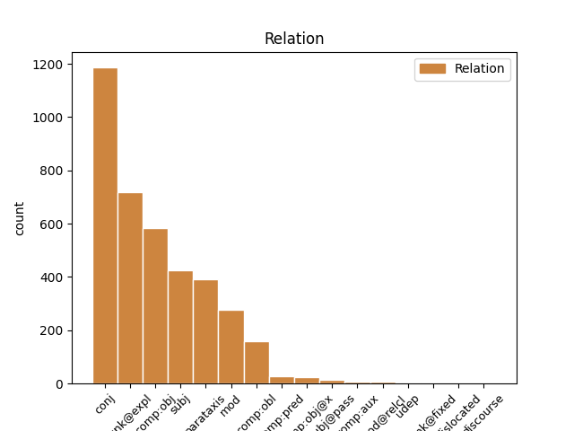
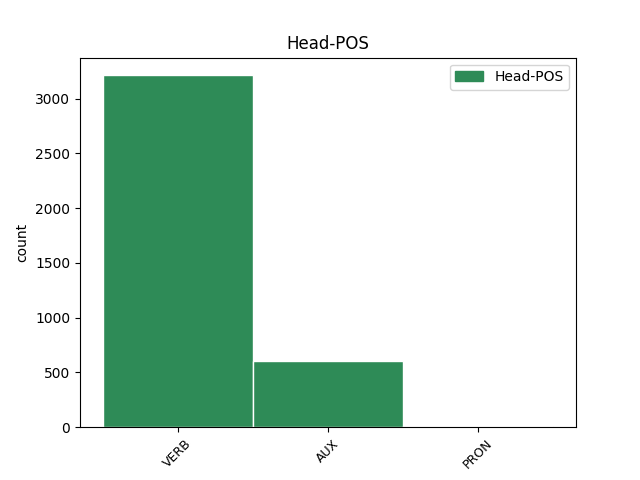
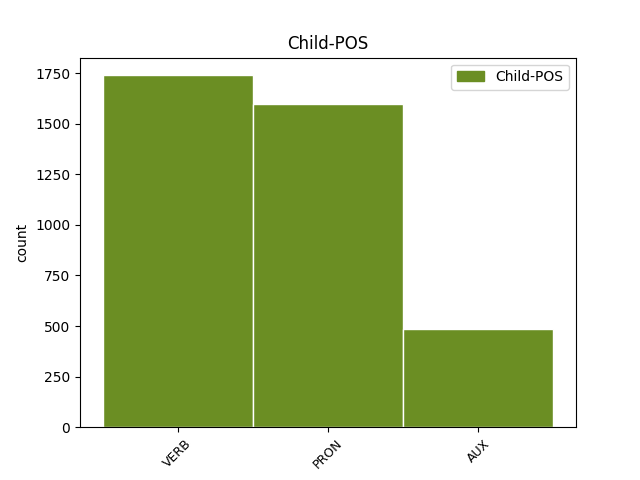

Distribution of features within this leaf



Agreement Rules sorted by frequency.
- When the dependent token is the conjunct(conj) of the head token, and the dependent token is VERB.
1 Avisado _ _ _ _ 0 _ _ _
2 de _ _ _ _ 0 _ _ _
3 o _ _ _ _ 0 _ _ _
4 alerta _ _ _ _ 0 _ _ _
5 de _ _ _ _ 0 _ _ _
6 o _ _ _ _ 0 _ _ _
7 governador _ _ _ _ 0 _ _ _
8 , _ _ _ _ 0 _ _ _
9 Itamar _ _ _ _ 0 _ _ _
10 desdenhou desdenhar VERB _ Mood=Ind|Number=Sing|Person=3|Tense=Past|VerbForm=Fin 0 _ _ _
11 os _ _ _ _ 0 _ _ _
12 riscos _ _ _ _ 0 _ _ _
13 e _ _ _ _ 0 _ _ _
14 manteve manter VERB _ Mood=Ind|Number=Sing|Person=3|Tense=Past|VerbForm=Fin 10 conj _ _
15 a _ _ _ _ 0 _ _ _
16 viagem _ _ _ _ 0 _ _ _
17 . _ _ _ _ 0 _ _ _
1 Os _ _ _ _ 0 _ _ _
2 norte-americanos _ _ _ _ 0 _ _ _
3 que _ _ _ _ 0 _ _ _
4 se se PRON _ Case=Acc|Gender=Masc|Number=Plur|Person=3|PronType=Prs 5 unk@expl _ _
5 reuniram reunir VERB _ Mood=Ind|Number=Plur|Person=3|VerbForm=Fin 0 _ _ _
6 ontem _ _ _ _ 0 _ _ _
7 em _ _ _ _ 0 _ _ _
8 a _ _ _ _ 0 _ _ _
9 Câmara _ _ _ _ 0 _ _ _
10 de _ _ _ _ 0 _ _ _
11 Comércio _ _ _ _ 0 _ _ _
12 Brasil-Estados _ _ _ _ 0 _ _ _
13 Unidos _ _ _ _ 0 _ _ _
14 , _ _ _ _ 0 _ _ _
15 em _ _ _ _ 0 _ _ _
16 São _ _ _ _ 0 _ _ _
17 Paulo _ _ _ _ 0 _ _ _
18 , _ _ _ _ 0 _ _ _
19 ficaram _ _ _ _ 0 _ _ _
20 conformados _ _ _ _ 0 _ _ _
21 com _ _ _ _ 0 _ _ _
22 a _ _ _ _ 0 _ _ _
23 derrota _ _ _ _ 0 _ _ _
24 de _ _ _ _ 0 _ _ _
25 sua _ _ _ _ 0 _ _ _
26 seleção _ _ _ _ 0 _ _ _
27 . _ _ _ _ 0 _ _ _
1 Segundo _ _ _ _ 0 _ _ _
2 o _ _ _ _ 0 _ _ _
3 detetive _ _ _ _ 0 _ _ _
4 , _ _ _ _ 0 _ _ _
5 eles eles PRON _ Case=Nom|Gender=Masc|Number=Plur|Person=3|PronType=Prs 6 subj _ _
6 ameaçaram ameaçar VERB _ Mood=Ind|Number=Plur|Person=3|VerbForm=Fin 0 _ _ _
7 invadir _ _ _ _ 0 _ _ _
8 a _ _ _ _ 0 _ _ _
9 delegacia _ _ _ _ 0 _ _ _
10 , _ _ _ _ 0 _ _ _
11 em _ _ _ _ 0 _ _ _
12 o _ _ _ _ 0 _ _ _
13 horário _ _ _ _ 0 _ _ _
14 de _ _ _ _ 0 _ _ _
15 visita _ _ _ _ 0 _ _ _
16 , _ _ _ _ 0 _ _ _
17 para _ _ _ _ 0 _ _ _
18 resgatar _ _ _ _ 0 _ _ _
19 dez _ _ _ _ 0 _ _ _
20 companheiros _ _ _ _ 0 _ _ _
21 . _ _ _ _ 0 _ _ _
1 O _ _ _ _ 0 _ _ _
2 bárbaro _ _ _ _ 0 _ _ _
3 linchamento _ _ _ _ 0 _ _ _
4 de _ _ _ _ 0 _ _ _
5 três _ _ _ _ 0 _ _ _
6 pessoas _ _ _ _ 0 _ _ _
7 ocorrido _ _ _ _ 0 _ _ _
8 esta _ _ _ _ 0 _ _ _
9 semana _ _ _ _ 0 _ _ _
10 em _ _ _ _ 0 _ _ _
11 o _ _ _ _ 0 _ _ _
12 Paraná _ _ _ _ 0 _ _ _
13 pode _ _ _ _ 0 _ _ _
14 ter _ _ _ _ 0 _ _ _
15 sido _ _ _ _ 0 _ _ _
16 particularmente _ _ _ _ 0 _ _ _
17 chocante _ _ _ _ 0 _ _ _
18 e _ _ _ _ 0 _ _ _
19 sem _ _ _ _ 0 _ _ _
20 dúvida _ _ _ _ 0 _ _ _
21 o ele PRON _ Case=Acc|Gender=Masc|Number=Sing|Person=3|PronType=Prs 22 comp:obj _ _
22 foi ser VERB _ Mood=Ind|Number=Sing|Person=3|Tense=Past|VerbForm=Fin 0 _ _ _
23 , _ _ _ _ 0 _ _ _
24 filmado _ _ _ _ 0 _ _ _
25 e _ _ _ _ 0 _ _ _
26 transmitido _ _ _ _ 0 _ _ _
27 por _ _ _ _ 0 _ _ _
28 a _ _ _ _ 0 _ _ _
29 televisão _ _ _ _ 0 _ _ _
30 em _ _ _ _ 0 _ _ _
31 toda _ _ _ _ 0 _ _ _
32 a _ _ _ _ 0 _ _ _
33 sua _ _ _ _ 0 _ _ _
34 brutalidade _ _ _ _ 0 _ _ _
35 , _ _ _ _ 0 _ _ _
36 mas _ _ _ _ 0 _ _ _
37 constitui _ _ _ _ 0 _ _ _
38 apenas _ _ _ _ 0 _ _ _
39 mais _ _ _ _ 0 _ _ _
40 um _ _ _ _ 0 _ _ _
41 em _ _ _ _ 0 _ _ _
42 a _ _ _ _ 0 _ _ _
43 lista _ _ _ _ 0 _ _ _
44 de _ _ _ _ 0 _ _ _
45 os _ _ _ _ 0 _ _ _
46 crimes _ _ _ _ 0 _ _ _
47 de _ _ _ _ 0 _ _ _
48 esse _ _ _ _ 0 _ _ _
49 tipo _ _ _ _ 0 _ _ _
50 registrados _ _ _ _ 0 _ _ _
51 em _ _ _ _ 0 _ _ _
52 o _ _ _ _ 0 _ _ _
53 país _ _ _ _ 0 _ _ _
54 . _ _ _ _ 0 _ _ _
1 As _ _ _ _ 0 _ _ _
2 novas _ _ _ _ 0 _ _ _
3 impressoras _ _ _ _ 0 _ _ _
4 a _ _ _ _ 0 _ _ _
5 laser _ _ _ _ 0 _ _ _
6 de _ _ _ _ 0 _ _ _
7 a _ _ _ _ 0 _ _ _
8 HP _ _ _ _ 0 _ _ _
9 vêm vir VERB _ Mood=Ind|Number=Plur|Person=3|Tense=Pres|VerbForm=Fin 0 _ _ _
10 com _ _ _ _ 0 _ _ _
11 um _ _ _ _ 0 _ _ _
12 novo _ _ _ _ 0 _ _ _
13 padrão _ _ _ _ 0 _ _ _
14 de _ _ _ _ 0 _ _ _
15 velocidade _ _ _ _ 0 _ _ _
16 12 _ _ _ _ 0 _ _ _
17 páginas _ _ _ _ 0 _ _ _
18 por _ _ _ _ 0 _ _ _
19 minuto _ _ _ _ 0 _ _ _
20 ( _ _ _ _ 0 _ _ _
21 ppm _ _ _ _ 0 _ _ _
22 ) _ _ _ _ 0 _ _ _
23 e _ _ _ _ 0 _ _ _
24 são ser AUX _ Mood=Ind|Number=Plur|Person=3|Tense=Pres|VerbForm=Fin 9 conj _ _
25 de _ _ _ _ 0 _ _ _
26 30 _ _ _ _ 0 _ _ _
27 % _ _ _ _ 0 _ _ _
28 a _ _ _ _ 0 _ _ _
29 40 _ _ _ _ 0 _ _ _
30 % _ _ _ _ 0 _ _ _
31 mais _ _ _ _ 0 _ _ _
32 rápidas _ _ _ _ 0 _ _ _
33 que _ _ _ _ 0 _ _ _
34 as _ _ _ _ 0 _ _ _
35 de _ _ _ _ 0 _ _ _
36 a _ _ _ _ 0 _ _ _
37 geração _ _ _ _ 0 _ _ _
38 anterior _ _ _ _ 0 _ _ _
39 . _ _ _ _ 0 _ _ _
1 Notamos _ _ _ _ 0 _ _ _
2 ainda _ _ _ _ 0 _ _ _
3 que _ _ _ _ 0 _ _ _
4 , _ _ _ _ 0 _ _ _
5 quando _ _ _ _ 0 _ _ _
6 um _ _ _ _ 0 _ _ _
7 passageiro _ _ _ _ 0 _ _ _
8 brasileiro _ _ _ _ 0 _ _ _
9 se _ _ _ _ 0 _ _ _
10 inscreve inscrever VERB _ Mood=Ind|Number=Sing|Person=3|Tense=Pres|VerbForm=Fin 30 mod _ _
11 em _ _ _ _ 0 _ _ _
12 um _ _ _ _ 0 _ _ _
13 programa _ _ _ _ 0 _ _ _
14 de _ _ _ _ 0 _ _ _
15 milhagem _ _ _ _ 0 _ _ _
16 de _ _ _ _ 0 _ _ _
17 uma _ _ _ _ 0 _ _ _
18 companhia _ _ _ _ 0 _ _ _
19 aérea _ _ _ _ 0 _ _ _
20 internacional _ _ _ _ 0 _ _ _
21 que _ _ _ _ 0 _ _ _
22 serve _ _ _ _ 0 _ _ _
23 o _ _ _ _ 0 _ _ _
24 Brasil _ _ _ _ 0 _ _ _
25 , _ _ _ _ 0 _ _ _
26 passados _ _ _ _ 0 _ _ _
27 30 _ _ _ _ 0 _ _ _
28 dias _ _ _ _ 0 _ _ _
29 , _ _ _ _ 0 _ _ _
30 recebe receber VERB _ Mood=Ind|Number=Sing|Person=3|Tense=Pres|VerbForm=Fin 0 _ _ _
31 a _ _ _ _ 0 _ _ _
32 proposta _ _ _ _ 0 _ _ _
33 de _ _ _ _ 0 _ _ _
34 a _ _ _ _ 0 _ _ _
35 Iapa _ _ _ _ 0 _ _ _
36 . _ _ _ _ 0 _ _ _
1 Primeiro _ _ _ _ 0 _ _ _
2 , _ _ _ _ 0 _ _ _
3 George _ _ _ _ 0 _ _ _
4 fazia fazer VERB _ Mood=Ind|Number=Sing|Person=3|Tense=Imp|VerbForm=Fin 0 _ _ _
5 a _ _ _ _ 0 _ _ _
6 música _ _ _ _ 0 _ _ _
7 ; _ _ _ _ 0 _ _ _
8 Ira _ _ _ _ 0 _ _ _
9 capturava capturar VERB _ Mood=Ind|Number=Sing|Person=3|Tense=Imp|VerbForm=Fin 4 parataxis _ _
10 o _ _ _ _ 0 _ _ _
11 « _ _ _ _ 0 _ _ _
12 espírito _ _ _ _ 0 _ _ _
13 » _ _ _ _ 0 _ _ _
14 de _ _ _ _ 0 _ _ _
15 a _ _ _ _ 0 _ _ _
16 canção _ _ _ _ 0 _ _ _
17 e _ _ _ _ 0 _ _ _
18 apunha _ _ _ _ 0 _ _ _
19 lhe _ _ _ _ 0 _ _ _
20 título _ _ _ _ 0 _ _ _
21 e _ _ _ _ 0 _ _ _
22 letra _ _ _ _ 0 _ _ _
23 . _ _ _ _ 0 _ _ _
1 Mais _ _ _ _ 0 _ _ _
2 que _ _ _ _ 0 _ _ _
3 isso _ _ _ _ 0 _ _ _
4 : _ _ _ _ 0 _ _ _
5 os _ _ _ _ 0 _ _ _
6 papéis _ _ _ _ 0 _ _ _
7 de _ _ _ _ 0 _ _ _
8 a _ _ _ _ 0 _ _ _
9 segurança _ _ _ _ 0 _ _ _
10 afirmavam afirmar VERB _ Mood=Ind|Number=Plur|Person=3|Tense=Imp|VerbForm=Fin 0 _ _ _
11 que _ _ _ _ 0 _ _ _
12 , _ _ _ _ 0 _ _ _
13 em _ _ _ _ 0 _ _ _
14 razão _ _ _ _ 0 _ _ _
15 de _ _ _ _ 0 _ _ _
16 a _ _ _ _ 0 _ _ _
17 inflação _ _ _ _ 0 _ _ _
18 alta _ _ _ _ 0 _ _ _
19 , _ _ _ _ 0 _ _ _
20 não _ _ _ _ 0 _ _ _
21 se _ _ _ _ 0 _ _ _
22 deveria dever VERB _ Mood=Cnd|Number=Sing|Person=3|VerbForm=Fin 10 comp:obj _ _
23 descartar _ _ _ _ 0 _ _ _
24 sequer _ _ _ _ 0 _ _ _
25 o _ _ _ _ 0 _ _ _
26 risco _ _ _ _ 0 _ _ _
27 de _ _ _ _ 0 _ _ _
28 o _ _ _ _ 0 _ _ _
29 público _ _ _ _ 0 _ _ _
30 atirar _ _ _ _ 0 _ _ _
31 objetos _ _ _ _ 0 _ _ _
32 em _ _ _ _ 0 _ _ _
33 o _ _ _ _ 0 _ _ _
34 camarote _ _ _ _ 0 _ _ _
35 presidencial _ _ _ _ 0 _ _ _
36 . _ _ _ _ 0 _ _ _
1 « _ _ _ _ 0 _ _ _
2 A _ _ _ _ 0 _ _ _
3 reação _ _ _ _ 0 _ _ _
4 de _ _ _ _ 0 _ _ _
5 o _ _ _ _ 0 _ _ _
6 público _ _ _ _ 0 _ _ _
7 é ser AUX _ Mood=Ind|Number=Sing|Person=3|Tense=Pres|VerbForm=Fin 11 parataxis _ _
8 imprevisível _ _ _ _ 0 _ _ _
9 » _ _ _ _ 0 _ _ _
10 , _ _ _ _ 0 _ _ _
11 disse dizer VERB _ Mood=Ind|Number=Sing|Person=3|Tense=Past|VerbForm=Fin 0 _ _ _
12 . _ _ _ _ 0 _ _ _
1 Primeiro _ _ _ _ 0 _ _ _
2 , _ _ _ _ 0 _ _ _
3 George _ _ _ _ 0 _ _ _
4 fazia _ _ _ _ 0 _ _ _
5 a _ _ _ _ 0 _ _ _
6 música _ _ _ _ 0 _ _ _
7 ; _ _ _ _ 0 _ _ _
8 Ira _ _ _ _ 0 _ _ _
9 capturava _ _ _ _ 0 _ _ _
10 o _ _ _ _ 0 _ _ _
11 « _ _ _ _ 0 _ _ _
12 espírito _ _ _ _ 0 _ _ _
13 » _ _ _ _ 0 _ _ _
14 de _ _ _ _ 0 _ _ _
15 a _ _ _ _ 0 _ _ _
16 canção _ _ _ _ 0 _ _ _
17 e _ _ _ _ 0 _ _ _
18 apunha apor VERB _ Mood=Ind|Number=Sing|Person=3|Tense=Imp|VerbForm=Fin 0 _ _ _
19 lhe ele PRON _ Case=Dat|Gender=Fem|Number=Sing|Person=3|PronType=Prs 18 comp:obl _ _
20 título _ _ _ _ 0 _ _ _
21 e _ _ _ _ 0 _ _ _
22 letra _ _ _ _ 0 _ _ _
23 . _ _ _ _ 0 _ _ _
1 A _ _ _ _ 0 _ _ _
2 sensação _ _ _ _ 0 _ _ _
3 de _ _ _ _ 0 _ _ _
4 insegurança _ _ _ _ 0 _ _ _
5 e _ _ _ _ 0 _ _ _
6 a _ _ _ _ 0 _ _ _
7 debilidade _ _ _ _ 0 _ _ _
8 de _ _ _ _ 0 _ _ _
9 o _ _ _ _ 0 _ _ _
10 poder _ _ _ _ 0 _ _ _
11 público _ _ _ _ 0 _ _ _
12 eram ser AUX _ Mood=Ind|Number=Plur|Person=3|Tense=Imp|VerbForm=Fin 0 _ _ _
13 sem _ _ _ _ 0 _ _ _
14 dúvida _ _ _ _ 0 _ _ _
15 características _ _ _ _ 0 _ _ _
16 de _ _ _ _ 0 _ _ _
17 os _ _ _ _ 0 _ _ _
18 Estados _ _ _ _ 0 _ _ _
19 Unidos _ _ _ _ 0 _ _ _
20 de _ _ _ _ 0 _ _ _
21 o _ _ _ _ 0 _ _ _
22 final _ _ _ _ 0 _ _ _
23 de _ _ _ _ 0 _ _ _
24 o _ _ _ _ 0 _ _ _
25 século _ _ _ _ 0 _ _ _
26 18 _ _ _ _ 0 _ _ _
27 , _ _ _ _ 0 _ _ _
28 quando _ _ _ _ 0 _ _ _
29 ( _ _ _ _ 0 _ _ _
30 segundo _ _ _ _ 0 _ _ _
31 a _ _ _ _ 0 _ _ _
32 versão _ _ _ _ 0 _ _ _
33 mais _ _ _ _ 0 _ _ _
34 aceita _ _ _ _ 0 _ _ _
35 ) _ _ _ _ 0 _ _ _
36 a _ _ _ _ 0 _ _ _
37 palavra _ _ _ _ 0 _ _ _
38 teria ter AUX _ Mood=Cnd|Number=Sing|Person=3|VerbForm=Fin 12 mod _ _
39 sido _ _ _ _ 0 _ _ _
40 inventada _ _ _ _ 0 _ _ _
41 a _ _ _ _ 0 _ _ _
42 partir _ _ _ _ 0 _ _ _
43 de _ _ _ _ 0 _ _ _
44 a _ _ _ _ 0 _ _ _
45 prática _ _ _ _ 0 _ _ _
46 adotada _ _ _ _ 0 _ _ _
47 por _ _ _ _ 0 _ _ _
48 um _ _ _ _ 0 _ _ _
49 juiz _ _ _ _ 0 _ _ _
50 Lynch _ _ _ _ 0 _ _ _
51 , _ _ _ _ 0 _ _ _
52 de _ _ _ _ 0 _ _ _
53 condenar _ _ _ _ 0 _ _ _
54 e _ _ _ _ 0 _ _ _
55 executar _ _ _ _ 0 _ _ _
56 seus _ _ _ _ 0 _ _ _
57 adversários _ _ _ _ 0 _ _ _
58 sem _ _ _ _ 0 _ _ _
59 o _ _ _ _ 0 _ _ _
60 devido _ _ _ _ 0 _ _ _
61 processo _ _ _ _ 0 _ _ _
62 legal _ _ _ _ 0 _ _ _
63 . _ _ _ _ 0 _ _ _
1 « _ _ _ _ 0 _ _ _
2 O _ _ _ _ 0 _ _ _
3 Viola _ _ _ _ 0 _ _ _
4 ou _ _ _ _ 0 _ _ _
5 o _ _ _ _ 0 _ _ _
6 Ronaldão _ _ _ _ 0 _ _ _
7 seria ser AUX _ Mood=Cnd|Number=Sing|Person=3|VerbForm=Fin 15 comp:obj _ _
8 um _ _ _ _ 0 _ _ _
9 ' _ _ _ _ 0 _ _ _
10 black _ _ _ _ 0 _ _ _
11 man _ _ _ _ 0 _ _ _
12 ' _ _ _ _ 0 _ _ _
13 perfeito _ _ _ _ 0 _ _ _
14 » _ _ _ _ 0 _ _ _
15 disse dizer VERB _ Mood=Ind|Number=Sing|Person=3|Tense=Past|VerbForm=Fin 0 _ _ _
16 um _ _ _ _ 0 _ _ _
17 de _ _ _ _ 0 _ _ _
18 os _ _ _ _ 0 _ _ _
19 modelos _ _ _ _ 0 _ _ _
20 masculinos _ _ _ _ 0 _ _ _
21 de _ _ _ _ 0 _ _ _
22 a _ _ _ _ 0 _ _ _
23 Ford _ _ _ _ 0 _ _ _
24 , _ _ _ _ 0 _ _ _
25 que _ _ _ _ 0 _ _ _
26 também _ _ _ _ 0 _ _ _
27 não _ _ _ _ 0 _ _ _
28 quis _ _ _ _ 0 _ _ _
29 se _ _ _ _ 0 _ _ _
30 identificar _ _ _ _ 0 _ _ _
31 . _ _ _ _ 0 _ _ _
1 Mas _ _ _ _ 0 _ _ _
2 a _ _ _ _ 0 _ _ _
3 roubalheira _ _ _ _ 0 _ _ _
4 é _ _ _ _ 0 _ _ _
5 apenas _ _ _ _ 0 _ _ _
6 a _ _ _ _ 0 _ _ _
7 ponta _ _ _ _ 0 _ _ _
8 de _ _ _ _ 0 _ _ _
9 o _ _ _ _ 0 _ _ _
10 « _ _ _ _ 0 _ _ _
11 lamaçal _ _ _ _ 0 _ _ _
12 » _ _ _ _ 0 _ _ _
13 : _ _ _ _ 0 _ _ _
14 o _ _ _ _ 0 _ _ _
15 problema _ _ _ _ 0 _ _ _
16 essencial _ _ _ _ 0 _ _ _
17 , _ _ _ _ 0 _ _ _
18 a _ _ _ _ 0 _ _ _
19 grande _ _ _ _ 0 _ _ _
20 delinquência _ _ _ _ 0 _ _ _
21 , _ _ _ _ 0 _ _ _
22 é _ _ _ _ 0 _ _ _
23 a _ _ _ _ 0 _ _ _
24 baixa _ _ _ _ 0 _ _ _
25 taxa _ _ _ _ 0 _ _ _
26 de _ _ _ _ 0 _ _ _
27 seriedade _ _ _ _ 0 _ _ _
28 e _ _ _ _ 0 _ _ _
29 compromisso _ _ _ _ 0 _ _ _
30 de _ _ _ _ 0 _ _ _
31 os _ _ _ _ 0 _ _ _
32 homens _ _ _ _ 0 _ _ _
33 públicos _ _ _ _ 0 _ _ _
34 , _ _ _ _ 0 _ _ _
35 responsável _ _ _ _ 0 _ _ _
36 por _ _ _ _ 0 _ _ _
37 estarmos _ _ _ _ 0 _ _ _
38 atolados _ _ _ _ 0 _ _ _
39 em _ _ _ _ 0 _ _ _
40 níveis _ _ _ _ 0 _ _ _
41 jamais _ _ _ _ 0 _ _ _
42 vistos _ _ _ _ 0 _ _ _
43 de _ _ _ _ 0 _ _ _
44 miséria _ _ _ _ 0 _ _ _
45 e _ _ _ _ 0 _ _ _
46 violência _ _ _ _ 0 _ _ _
47 e _ _ _ _ 0 _ _ _
48 , _ _ _ _ 0 _ _ _
49 como _ _ _ _ 0 _ _ _
50 diz _ _ _ _ 0 _ _ _
51 o _ _ _ _ 0 _ _ _
52 salmo _ _ _ _ 0 _ _ _
53 , _ _ _ _ 0 _ _ _
54 é ser VERB _ Mood=Ind|Number=Sing|Person=3|Tense=Pres|VerbForm=Fin 0 _ _ _
55 aí _ _ _ _ 0 _ _ _
56 que _ _ _ _ 0 _ _ _
57 « _ _ _ _ 0 _ _ _
58 não _ _ _ _ 0 _ _ _
59 se _ _ _ _ 0 _ _ _
60 pode poder VERB _ Mood=Ind|Number=Sing|Person=3|Tense=Pres|VerbForm=Fin 54 subj _ _
61 estar _ _ _ _ 0 _ _ _
62 em _ _ _ _ 0 _ _ _
63 pé _ _ _ _ 0 _ _ _
64 » _ _ _ _ 0 _ _ _
65 . _ _ _ _ 0 _ _ _
1 « _ _ _ _ 0 _ _ _
2 O _ _ _ _ 0 _ _ _
3 Viola _ _ _ _ 0 _ _ _
4 ou _ _ _ _ 0 _ _ _
5 o _ _ _ _ 0 _ _ _
6 Ronaldão _ _ _ _ 0 _ _ _
7 seria _ _ _ _ 0 _ _ _
8 um _ _ _ _ 0 _ _ _
9 ' _ _ _ _ 0 _ _ _
10 black _ _ _ _ 0 _ _ _
11 man _ _ _ _ 0 _ _ _
12 ' _ _ _ _ 0 _ _ _
13 perfeito _ _ _ _ 0 _ _ _
14 » _ _ _ _ 0 _ _ _
15 disse _ _ _ _ 0 _ _ _
16 um _ _ _ _ 0 _ _ _
17 de _ _ _ _ 0 _ _ _
18 os _ _ _ _ 0 _ _ _
19 modelos _ _ _ _ 0 _ _ _
20 masculinos _ _ _ _ 0 _ _ _
21 de _ _ _ _ 0 _ _ _
22 a _ _ _ _ 0 _ _ _
23 Ford _ _ _ _ 0 _ _ _
24 , _ _ _ _ 0 _ _ _
25 que _ _ _ _ 0 _ _ _
26 também _ _ _ _ 0 _ _ _
27 não _ _ _ _ 0 _ _ _
28 quis querer VERB _ Mood=Ind|Number=Sing|Person=3|Tense=Past|VerbForm=Fin 0 _ _ _
29 se _ _ _ _ 0 _ _ _
30 identificar identificar VERB _ Number=Sing|Person=3|VerbForm=Inf 28 comp:obj@x _ SpaceAfter=No
31 . _ _ _ _ 0 _ _ _
1 Filho _ _ _ _ 0 _ _ _
2 de _ _ _ _ 0 _ _ _
3 Vicente _ _ _ _ 0 _ _ _
4 Rivera _ _ _ _ 0 _ _ _
5 Gonzalez _ _ _ _ 0 _ _ _
6 , _ _ _ _ 0 _ _ _
7 ele ele PRON _ Case=Nom|Gender=Masc|Number=Sing|Person=3|PronType=Prs 9 subj@pass _ _
8 já _ _ _ _ 0 _ _ _
9 foi ser AUX _ Mood=Ind|Number=Sing|Person=3|Tense=Past|VerbForm=Fin 0 _ _ _
10 condenado _ _ _ _ 0 _ _ _
11 em _ _ _ _ 0 _ _ _
12 a _ _ _ _ 0 _ _ _
13 Holanda _ _ _ _ 0 _ _ _
14 a _ _ _ _ 0 _ _ _
15 14 _ _ _ _ 0 _ _ _
16 anos _ _ _ _ 0 _ _ _
17 de _ _ _ _ 0 _ _ _
18 prisão _ _ _ _ 0 _ _ _
19 , _ _ _ _ 0 _ _ _
20 segundo _ _ _ _ 0 _ _ _
21 a _ _ _ _ 0 _ _ _
22 PF _ _ _ _ 0 _ _ _
23 . _ _ _ _ 0 _ _ _
1 Porque _ _ _ _ 0 _ _ _
2 foi ser AUX _ Mood=Ind|Number=Sing|Person=3|Tense=Past|VerbForm=Fin 0 _ _ _
3 ele ele PRON _ Case=Nom|Gender=Masc|Number=Sing|Person=3|PronType=Prs 2 comp:pred _ _
4 que _ _ _ _ 0 _ _ _
5 fez _ _ _ _ 0 _ _ _
6 ! _ _ _ _ 0 _ _ _
1 É ser AUX _ Mood=Ind|Number=Sing|Person=3|Tense=Pres|VerbForm=Fin 0 _ _ _
2 como _ _ _ _ 0 _ _ _
3 se _ _ _ _ 0 _ _ _
4 estivesse estar VERB _ Mood=Sub|Number=Sing|Person=3|Tense=Imp|VerbForm=Fin 1 comp:pred _ _
5 lá _ _ _ _ 0 _ _ _
6 » _ _ _ _ 0 _ _ _
7 , _ _ _ _ 0 _ _ _
8 acrescenta _ _ _ _ 0 _ _ _
9 Rodrigo _ _ _ _ 0 _ _ _
10 . _ _ _ _ 0 _ _ _
1 Seleção _ _ _ _ 0 _ _ _
2 é _ _ _ _ 0 _ _ _
3 isso _ _ _ _ 0 _ _ _
4 , _ _ _ _ 0 _ _ _
5 joga jogar VERB _ Mood=Ind|Number=Sing|Person=3|Tense=Pres|VerbForm=Fin 0 _ _ _
6 quem _ _ _ _ 0 _ _ _
7 está estar AUX _ Mood=Ind|Number=Sing|Person=3|Tense=Pres|VerbForm=Fin 5 subj _ _
8 melhor _ _ _ _ 0 _ _ _
9 , _ _ _ _ 0 _ _ _
10 não _ _ _ _ 0 _ _ _
11 tem _ _ _ _ 0 _ _ _
12 esse _ _ _ _ 0 _ _ _
13 negócio _ _ _ _ 0 _ _ _
14 de _ _ _ _ 0 _ _ _
15 nome _ _ _ _ 0 _ _ _
16 . _ _ _ _ 0 _ _ _
1 Tem ter AUX _ Mood=Ind|Number=Sing|Person=3|Tense=Pres|VerbForm=Fin 0 _ _ _
2 que _ _ _ _ 0 _ _ _
3 se _ _ _ _ 0 _ _ _
4 demonstrar demonstrar VERB _ Number=Sing|Person=3|VerbForm=Inf 1 comp:aux _ _
5 através _ _ _ _ 0 _ _ _
6 de _ _ _ _ 0 _ _ _
7 contas _ _ _ _ 0 _ _ _
8 e _ _ _ _ 0 _ _ _
9 de _ _ _ _ 0 _ _ _
10 raciocínios _ _ _ _ 0 _ _ _
11 que _ _ _ _ 0 _ _ _
12 o _ _ _ _ 0 _ _ _
13 expurgo _ _ _ _ 0 _ _ _
14 significará _ _ _ _ 0 _ _ _
15 perda _ _ _ _ 0 _ _ _
16 . _ _ _ _ 0 _ _ _
1 Porque _ _ _ _ 0 _ _ _
2 foi _ _ _ _ 0 _ _ _
3 ele ele PRON _ Case=Nom|Gender=Masc|Number=Sing|Person=3|PronType=Prs 0 _ _ _
4 que _ _ _ _ 0 _ _ _
5 fez fazer VERB _ Mood=Ind|Number=Sing|Person=3|Tense=Past|VerbForm=Fin 3 mod@relcl _ SpaceAfter=No
6 ! _ _ _ _ 0 _ _ _
1 Faltam faltar VERB _ Mood=Ind|Number=Plur|Person=3|Tense=Pres|VerbForm=Fin 0 _ _ _
2 serem ser AUX _ Number=Plur|Person=3|VerbForm=Inf 1 comp:obj@x _ _
3 renegociados _ _ _ _ 0 _ _ _
4 mais _ _ _ _ 0 _ _ _
5 R$ _ _ _ _ 0 _ _ _
6 700 _ _ _ _ 0 _ _ _
7 milhões _ _ _ _ 0 _ _ _
8 . _ _ _ _ 0 _ _ _
1 Malkovich _ _ _ _ 0 _ _ _
2 ( _ _ _ _ 0 _ _ _
3 Michael _ _ _ _ 0 _ _ _
4 ) _ _ _ _ 0 _ _ _
5 e _ _ _ _ 0 _ _ _
6 Deneuve _ _ _ _ 0 _ _ _
7 ( _ _ _ _ 0 _ _ _
8 Hélène _ _ _ _ 0 _ _ _
9 ) _ _ _ _ 0 _ _ _
10 são _ _ _ _ 0 _ _ _
11 um _ _ _ _ 0 _ _ _
12 casal _ _ _ _ 0 _ _ _
13 -- _ _ _ _ 0 _ _ _
14 ele ele PRON _ Case=Nom|Gender=Masc|Number=Sing|Person=3|PronType=Prs 0 _ _ _
15 americano _ _ _ _ 0 _ _ _
16 , _ _ _ _ 0 _ _ _
17 ela ele PRON _ Case=Nom|Gender=Fem|Number=Sing|Person=3|PronType=Prs 14 conj _ _
18 francesa _ _ _ _ 0 _ _ _
19 -- _ _ _ _ 0 _ _ _
20 que _ _ _ _ 0 _ _ _
21 vem _ _ _ _ 0 _ _ _
22 a _ _ _ _ 0 _ _ _
23 Portugal _ _ _ _ 0 _ _ _
24 porque _ _ _ _ 0 _ _ _
25 Michael _ _ _ _ 0 _ _ _
26 , _ _ _ _ 0 _ _ _
27 historiador _ _ _ _ 0 _ _ _
28 , _ _ _ _ 0 _ _ _
29 julga _ _ _ _ 0 _ _ _
30 que _ _ _ _ 0 _ _ _
31 pode _ _ _ _ 0 _ _ _
32 encontrar _ _ _ _ 0 _ _ _
33 em _ _ _ _ 0 _ _ _
34 a _ _ _ _ 0 _ _ _
35 Arrábida _ _ _ _ 0 _ _ _
36 documentos _ _ _ _ 0 _ _ _
37 que _ _ _ _ 0 _ _ _
38 lhe _ _ _ _ 0 _ _ _
39 comprovem _ _ _ _ 0 _ _ _
40 uma _ _ _ _ 0 _ _ _
41 tese _ _ _ _ 0 _ _ _
42 segundo _ _ _ _ 0 _ _ _
43 a _ _ _ _ 0 _ _ _
44 qual _ _ _ _ 0 _ _ _
45 Shakespeare _ _ _ _ 0 _ _ _
46 era _ _ _ _ 0 _ _ _
47 um _ _ _ _ 0 _ _ _
48 judeu _ _ _ _ 0 _ _ _
49 de _ _ _ _ 0 _ _ _
50 origem _ _ _ _ 0 _ _ _
51 espanhola _ _ _ _ 0 _ _ _
52 . _ _ _ _ 0 _ _ _
1 A _ _ _ _ 0 _ _ _
2 comissão _ _ _ _ 0 _ _ _
3 mista _ _ _ _ 0 _ _ _
4 deverá _ _ _ _ 0 _ _ _
5 iniciar _ _ _ _ 0 _ _ _
6 amanhã _ _ _ _ 0 _ _ _
7 os _ _ _ _ 0 _ _ _
8 seus _ _ _ _ 0 _ _ _
9 trabalhos _ _ _ _ 0 _ _ _
10 que _ _ _ _ 0 _ _ _
11 , _ _ _ _ 0 _ _ _
12 espera esperar VERB _ Mood=Ind|Number=Sing|Person=3|Tense=Pres|VerbForm=Fin 0 _ _ _
13 se _ _ _ _ 0 _ _ _
14 , _ _ _ _ 0 _ _ _
15 estejam estar AUX _ Mood=Sub|Number=Plur|Person=3|Tense=Pres|VerbForm=Fin 12 comp:pred _ _
16 terminados _ _ _ _ 0 _ _ _
17 em _ _ _ _ 0 _ _ _
18 o _ _ _ _ 0 _ _ _
19 fim _ _ _ _ 0 _ _ _
20 de _ _ _ _ 0 _ _ _
21 a _ _ _ _ 0 _ _ _
22 semana _ _ _ _ 0 _ _ _
23 . _ _ _ _ 0 _ _ _
1 O _ _ _ _ 0 _ _ _
2 essencial _ _ _ _ 0 _ _ _
3 , _ _ _ _ 0 _ _ _
4 em _ _ _ _ 0 _ _ _
5 a _ _ _ _ 0 _ _ _
6 compreensão _ _ _ _ 0 _ _ _
7 de _ _ _ _ 0 _ _ _
8 os _ _ _ _ 0 _ _ _
9 « _ _ _ _ 0 _ _ _
10 jogos _ _ _ _ 0 _ _ _
11 de _ _ _ _ 0 _ _ _
12 poder _ _ _ _ 0 _ _ _
13 » _ _ _ _ 0 _ _ _
14 , _ _ _ _ 0 _ _ _
15 é _ _ _ _ 0 _ _ _
16 conseguir _ _ _ _ 0 _ _ _
17 saber _ _ _ _ 0 _ _ _
18 quem _ _ _ _ 0 _ _ _
19 está estar AUX _ Mood=Ind|Number=Sing|Person=3|Tense=Pres|VerbForm=Fin 0 _ _ _
20 envolvido _ _ _ _ 0 _ _ _
21 e _ _ _ _ 0 _ _ _
22 onde _ _ _ _ 0 _ _ _
23 está estar AUX _ Mood=Ind|Number=Sing|Person=3|Tense=Pres|VerbForm=Fin 19 udep _ _
24 a _ _ _ _ 0 _ _ _
25 força _ _ _ _ 0 _ _ _
26 em _ _ _ _ 0 _ _ _
27 cada _ _ _ _ 0 _ _ _
28 situação _ _ _ _ 0 _ _ _
29 concreta _ _ _ _ 0 _ _ _
30 . _ _ _ _ 0 _ _ _
1 Ele ele PRON _ Case=Nom|Gender=Masc|Number=Sing|Person=3|PronType=Prs 0 _ _ _
2 , _ _ _ _ 0 _ _ _
3 em _ _ _ _ 0 _ _ _
4 Frankfurt _ _ _ _ 0 _ _ _
5 , _ _ _ _ 0 _ _ _
6 ela ele PRON _ Case=Nom|Gender=Fem|Number=Sing|Person=3|PronType=Prs 1 parataxis _ _
7 em _ _ _ _ 0 _ _ _
8 casa _ _ _ _ 0 _ _ _
9 . _ _ _ _ 0 _ _ _
1 No _ _ _ _ 0 _ _ _
2 que _ _ _ _ 0 _ _ _
3 se se PRON _ Case=Acc|Number=Sing|Person=3|PronType=Prs 0 _ _ _
4 refere referir VERB _ Mood=Ind|Number=Sing|Person=3|Tense=Pres|VerbForm=Fin 3 unk@fixed _ _
5 a _ _ _ _ 0 _ _ _
6 as _ _ _ _ 0 _ _ _
7 regras _ _ _ _ 0 _ _ _
8 de _ _ _ _ 0 _ _ _
9 o _ _ _ _ 0 _ _ _
10 jogo _ _ _ _ 0 _ _ _
11 , _ _ _ _ 0 _ _ _
12 considera _ _ _ _ 0 _ _ _
13 que _ _ _ _ 0 _ _ _
14 o _ _ _ _ 0 _ _ _
15 futebol _ _ _ _ 0 _ _ _
16 deve _ _ _ _ 0 _ _ _
17 continuar _ _ _ _ 0 _ _ _
18 a _ _ _ _ 0 _ _ _
19 ser _ _ _ _ 0 _ _ _
20 futebol _ _ _ _ 0 _ _ _
21 . _ _ _ _ 0 _ _ _
1 Obviamente _ _ _ _ 0 _ _ _
2 , _ _ _ _ 0 _ _ _
3 Carlos _ _ _ _ 0 _ _ _
4 Resende _ _ _ _ 0 _ _ _
5 será ser AUX _ Mood=Ind|Number=Sing|Person=3|Tense=Fut|VerbForm=Fin 0 _ _ _
6 uma _ _ _ _ 0 _ _ _
7 de _ _ _ _ 0 _ _ _
8 as _ _ _ _ 0 _ _ _
9 peças _ _ _ _ 0 _ _ _
10 fulcrais _ _ _ _ 0 _ _ _
11 de _ _ _ _ 0 _ _ _
12 a _ _ _ _ 0 _ _ _
13 estratégia _ _ _ _ 0 _ _ _
14 de _ _ _ _ 0 _ _ _
15 os _ _ _ _ 0 _ _ _
16 bracarenses _ _ _ _ 0 _ _ _
17 , _ _ _ _ 0 _ _ _
18 ele ele PRON _ Case=Nom|Gender=Masc|Number=Sing|Person=3|PronType=Prs 5 dislocated _ _
19 que _ _ _ _ 0 _ _ _
20 tem _ _ _ _ 0 _ _ _
21 sido _ _ _ _ 0 _ _ _
22 um _ _ _ _ 0 _ _ _
23 de _ _ _ _ 0 _ _ _
24 os _ _ _ _ 0 _ _ _
25 maiores _ _ _ _ 0 _ _ _
26 responsáveis _ _ _ _ 0 _ _ _
27 por _ _ _ _ 0 _ _ _
28 o _ _ _ _ 0 _ _ _
29 momento _ _ _ _ 0 _ _ _
30 tranquilo _ _ _ _ 0 _ _ _
31 que _ _ _ _ 0 _ _ _
32 a _ _ _ _ 0 _ _ _
33 sua _ _ _ _ 0 _ _ _
34 equipa _ _ _ _ 0 _ _ _
35 atravessa _ _ _ _ 0 _ _ _
36 em _ _ _ _ 0 _ _ _
37 o _ _ _ _ 0 _ _ _
38 campeonato _ _ _ _ 0 _ _ _
39 nacional _ _ _ _ 0 _ _ _
40 -- _ _ _ _ 0 _ _ _
1 « _ _ _ _ 0 _ _ _
2 Em _ _ _ _ 0 _ _ _
3 a _ _ _ _ 0 _ _ _
4 concertação _ _ _ _ 0 _ _ _
5 , _ _ _ _ 0 _ _ _
6 há _ _ _ _ 0 _ _ _
7 ainda _ _ _ _ 0 _ _ _
8 muito _ _ _ _ 0 _ _ _
9 a _ _ _ _ 0 _ _ _
10 fazer _ _ _ _ 0 _ _ _
11 » _ _ _ _ 0 _ _ _
12 , _ _ _ _ 0 _ _ _
13 constatou _ _ _ _ 0 _ _ _
14 Maria _ _ _ _ 0 _ _ _
15 José _ _ _ _ 0 _ _ _
16 Constâncio _ _ _ _ 0 _ _ _
17 , _ _ _ _ 0 _ _ _
18 que _ _ _ _ 0 _ _ _
19 prometeu prometer VERB _ Mood=Ind|Number=Sing|Person=3|Tense=Past|VerbForm=Fin 0 _ _ _
20 o _ _ _ _ 0 _ _ _
21 seu _ _ _ _ 0 _ _ _
22 « _ _ _ _ 0 _ _ _
23 empenhamento _ _ _ _ 0 _ _ _
24 pessoal _ _ _ _ 0 _ _ _
25 » _ _ _ _ 0 _ _ _
26 para _ _ _ _ 0 _ _ _
27 que _ _ _ _ 0 _ _ _
28 « _ _ _ _ 0 _ _ _
29 a _ _ _ _ 0 _ _ _
30 falta _ _ _ _ 0 _ _ _
31 de _ _ _ _ 0 _ _ _
32 concertação _ _ _ _ 0 _ _ _
33 entre _ _ _ _ 0 _ _ _
34 as _ _ _ _ 0 _ _ _
35 entidades _ _ _ _ 0 _ _ _
36 locais _ _ _ _ 0 _ _ _
37 e _ _ _ _ 0 _ _ _
38 o _ _ _ _ 0 _ _ _
39 governo _ _ _ _ 0 _ _ _
40 central _ _ _ _ 0 _ _ _
41 » _ _ _ _ 0 _ _ _
42 deixe deixar VERB _ Mood=Sub|Number=Sing|Person=3|Tense=Pres|VerbForm=Fin 19 udep _ MWE=deixe_de|MWEPOS=AUX
43 de _ _ _ _ 0 _ _ _
44 ser _ _ _ _ 0 _ _ _
45 um _ _ _ _ 0 _ _ _
46 « _ _ _ _ 0 _ _ _
47 ponto _ _ _ _ 0 _ _ _
48 fraco _ _ _ _ 0 _ _ _
49 » _ _ _ _ 0 _ _ _
50 de _ _ _ _ 0 _ _ _
51 o _ _ _ _ 0 _ _ _
52 PDI _ _ _ _ 0 _ _ _
53 de _ _ _ _ 0 _ _ _
54 o _ _ _ _ 0 _ _ _
55 Vale _ _ _ _ 0 _ _ _
56 de _ _ _ _ 0 _ _ _
57 o _ _ _ _ 0 _ _ _
58 Ave _ _ _ _ 0 _ _ _
59 . _ _ _ _ 0 _ _ _
1 Além _ _ _ _ 0 _ _ _
2 de _ _ _ _ 0 _ _ _
3 aumentar _ _ _ _ 0 _ _ _
4 o _ _ _ _ 0 _ _ _
5 número _ _ _ _ 0 _ _ _
6 de _ _ _ _ 0 _ _ _
7 cassações _ _ _ _ 0 _ _ _
8 , _ _ _ _ 0 _ _ _
9 deve _ _ _ _ 0 _ _ _
10 se _ _ _ _ 0 _ _ _
11 estimular _ _ _ _ 0 _ _ _
12 as _ _ _ _ 0 _ _ _
13 demais _ _ _ _ 0 _ _ _
14 CPIs _ _ _ _ 0 _ _ _
15 sobre _ _ _ _ 0 _ _ _
16 Empreiteiras _ _ _ _ 0 _ _ _
17 , _ _ _ _ 0 _ _ _
18 financiamentos _ _ _ _ 0 _ _ _
19 eleitorais _ _ _ _ 0 _ _ _
20 e _ _ _ _ 0 _ _ _
21 CUT _ _ _ _ 0 _ _ _
22 a _ _ _ _ 0 _ _ _
23 CPI _ _ _ _ 0 _ _ _
24 de _ _ _ _ 0 _ _ _
25 a _ _ _ _ 0 _ _ _
26 CUT _ _ _ _ 0 _ _ _
27 terá _ _ _ _ 0 _ _ _
28 o _ _ _ _ 0 _ _ _
29 dom _ _ _ _ 0 _ _ _
30 de _ _ _ _ 0 _ _ _
31 trazer _ _ _ _ 0 _ _ _
32 a _ _ _ _ 0 _ _ _
33 a _ _ _ _ 0 _ _ _
34 tona _ _ _ _ 0 _ _ _
35 possíveis _ _ _ _ 0 _ _ _
36 desvios _ _ _ _ 0 _ _ _
37 de _ _ _ _ 0 _ _ _
38 a _ _ _ _ 0 _ _ _
39 burocracia _ _ _ _ 0 _ _ _
40 e _ _ _ _ 0 _ _ _
41 de _ _ _ _ 0 _ _ _
42 a _ _ _ _ 0 _ _ _
43 praga _ _ _ _ 0 _ _ _
44 de _ _ _ _ 0 _ _ _
45 o _ _ _ _ 0 _ _ _
46 corporativismo _ _ _ _ 0 _ _ _
47 , _ _ _ _ 0 _ _ _
48 o _ _ _ _ 0 _ _ _
49 que _ _ _ _ 0 _ _ _
50 , _ _ _ _ 0 _ _ _
51 acreditem acreditar VERB _ Mood=Sub|Number=Plur|Person=3|Tense=Pres|VerbForm=Fin 53 discourse _ SpaceAfter=No
52 , _ _ _ _ 0 _ _ _
53 vai ir AUX _ Mood=Ind|Number=Sing|Person=3|Tense=Pres|VerbForm=Fin 0 _ _ _
54 acabar _ _ _ _ 0 _ _ _
55 ajudando _ _ _ _ 0 _ _ _
56 não _ _ _ _ 0 _ _ _
57 apenas _ _ _ _ 0 _ _ _
58 o _ _ _ _ 0 _ _ _
59 PT _ _ _ _ 0 _ _ _
60 mas _ _ _ _ 0 _ _ _
61 a _ _ _ _ 0 _ _ _
62 democracia _ _ _ _ 0 _ _ _
63 . _ _ _ _ 0 _ _ _
Disagree Examples:
1 « _ _ _ _ 0 _ _ _
2 Estamos estar VERB _ Mood=Ind|Number=Plur|Person=1|Tense=Pres|VerbForm=Fin 12 comp:obj _ MWE=Estamos_a|MWEPOS=AUX
3 a _ _ _ _ 0 _ _ _
4 dotar _ _ _ _ 0 _ _ _
5 os _ _ _ _ 0 _ _ _
6 computadores _ _ _ _ 0 _ _ _
7 de _ _ _ _ 0 _ _ _
8 um _ _ _ _ 0 _ _ _
9 novo _ _ _ _ 0 _ _ _
10 sentido _ _ _ _ 0 _ _ _
11 » _ _ _ _ 0 _ _ _
12 disse dizer VERB _ Mood=Ind|Number=Sing|Person=3|Tense=Past|VerbForm=Fin 0 _ _ _
13 Steve _ _ _ _ 0 _ _ _
14 d' _ _ _ _ 0 _ _ _
15 Averio _ _ _ _ 0 _ _ _
16 , _ _ _ _ 0 _ _ _
17 director _ _ _ _ 0 _ _ _
18 de _ _ _ _ 0 _ _ _
19 marketing _ _ _ _ 0 _ _ _
20 para _ _ _ _ 0 _ _ _
21 a _ _ _ _ 0 _ _ _
22 Europa _ _ _ _ 0 _ _ _
23 de _ _ _ _ 0 _ _ _
24 a _ _ _ _ 0 _ _ _
25 Logitech _ _ _ _ 0 _ _ _
26 . _ _ _ _ 0 _ _ _
1 « _ _ _ _ 0 _ _ _
2 Não _ _ _ _ 0 _ _ _
3 estou estar VERB _ Mood=Ind|Number=Sing|Person=1|Tense=Pres|VerbForm=Fin 21 comp:obj _ MWE=estou_a|MWEPOS=AUX
4 a _ _ _ _ 0 _ _ _
5 ver _ _ _ _ 0 _ _ _
6 que _ _ _ _ 0 _ _ _
7 , _ _ _ _ 0 _ _ _
8 para _ _ _ _ 0 _ _ _
9 emitir _ _ _ _ 0 _ _ _
10 uma _ _ _ _ 0 _ _ _
11 opinião _ _ _ _ 0 _ _ _
12 , _ _ _ _ 0 _ _ _
13 nós _ _ _ _ 0 _ _ _
14 tivéssemos _ _ _ _ 0 _ _ _
15 de _ _ _ _ 0 _ _ _
16 informar _ _ _ _ 0 _ _ _
17 previamente _ _ _ _ 0 _ _ _
18 o _ _ _ _ 0 _ _ _
19 ministro _ _ _ _ 0 _ _ _
20 , _ _ _ _ 0 _ _ _
21 afirmou afirmar VERB _ Mood=Ind|Number=Sing|Person=3|Tense=Past|VerbForm=Fin 0 _ _ _
22 . _ _ _ _ 0 _ _ _
1 E _ _ _ _ 0 _ _ _
2 uma _ _ _ _ 0 _ _ _
3 vez _ _ _ _ 0 _ _ _
4 que _ _ _ _ 0 _ _ _
5 um _ _ _ _ 0 _ _ _
6 de _ _ _ _ 0 _ _ _
7 os _ _ _ _ 0 _ _ _
8 nossos _ _ _ _ 0 _ _ _
9 artistas _ _ _ _ 0 _ _ _
10 conclui _ _ _ _ 0 _ _ _
11 um _ _ _ _ 0 _ _ _
12 acordo _ _ _ _ 0 _ _ _
13 com _ _ _ _ 0 _ _ _
14 um _ _ _ _ 0 _ _ _
15 artista _ _ _ _ 0 _ _ _
16 francês _ _ _ _ 0 _ _ _
17 , _ _ _ _ 0 _ _ _
18 isso _ _ _ _ 0 _ _ _
19 não _ _ _ _ 0 _ _ _
20 nos nós PRON _ Case=Acc|Gender=Unsp|Number=Plur|Person=1|PronType=Prs 21 comp:obj _ _
21 desonra desonrar VERB _ Mood=Ind|Number=Sing|Person=3|Tense=Pres|VerbForm=Fin 0 _ _ _
22 » _ _ _ _ 0 _ _ _
23 . _ _ _ _ 0 _ _ _
1 Lutou _ _ _ _ 0 _ _ _
2 como _ _ _ _ 0 _ _ _
3 lhe ele PRON _ Case=Dat|Gender=Masc|Number=Sing|Person=3|PronType=Prs 4 comp:obl _ _
4 vemos ver VERB _ Mood=Ind|Number=Plur|Person=1|Tense=Pres|VerbForm=Fin 0 _ _ _
5 poucas _ _ _ _ 0 _ _ _
6 vezes _ _ _ _ 0 _ _ _
7 e _ _ _ _ 0 _ _ _
8 ainda _ _ _ _ 0 _ _ _
9 teve _ _ _ _ 0 _ _ _
10 em _ _ _ _ 0 _ _ _
11 os _ _ _ _ 0 _ _ _
12 pés _ _ _ _ 0 _ _ _
13 uma _ _ _ _ 0 _ _ _
14 boa _ _ _ _ 0 _ _ _
15 oportunidade _ _ _ _ 0 _ _ _
16 de _ _ _ _ 0 _ _ _
17 golo _ _ _ _ 0 _ _ _
18 , _ _ _ _ 0 _ _ _
19 mas _ _ _ _ 0 _ _ _
20 teve _ _ _ _ 0 _ _ _
21 que _ _ _ _ 0 _ _ _
22 rematar _ _ _ _ 0 _ _ _
23 em _ _ _ _ 0 _ _ _
24 jeito _ _ _ _ 0 _ _ _
25 e _ _ _ _ 0 _ _ _
26 não _ _ _ _ 0 _ _ _
27 em _ _ _ _ 0 _ _ _
28 força _ _ _ _ 0 _ _ _
29 , _ _ _ _ 0 _ _ _
30 como _ _ _ _ 0 _ _ _
31 gosta _ _ _ _ 0 _ _ _
32 mais _ _ _ _ 0 _ _ _
33 . _ _ _ _ 0 _ _ _
1 Lutou lutar VERB _ Mood=Ind|Number=Sing|Person=3|Tense=Past|VerbForm=Fin 0 _ _ _
2 como _ _ _ _ 0 _ _ _
3 lhe _ _ _ _ 0 _ _ _
4 vemos ver VERB _ Mood=Ind|Number=Plur|Person=1|Tense=Pres|VerbForm=Fin 1 mod _ _
5 poucas _ _ _ _ 0 _ _ _
6 vezes _ _ _ _ 0 _ _ _
7 e _ _ _ _ 0 _ _ _
8 ainda _ _ _ _ 0 _ _ _
9 teve _ _ _ _ 0 _ _ _
10 em _ _ _ _ 0 _ _ _
11 os _ _ _ _ 0 _ _ _
12 pés _ _ _ _ 0 _ _ _
13 uma _ _ _ _ 0 _ _ _
14 boa _ _ _ _ 0 _ _ _
15 oportunidade _ _ _ _ 0 _ _ _
16 de _ _ _ _ 0 _ _ _
17 golo _ _ _ _ 0 _ _ _
18 , _ _ _ _ 0 _ _ _
19 mas _ _ _ _ 0 _ _ _
20 teve _ _ _ _ 0 _ _ _
21 que _ _ _ _ 0 _ _ _
22 rematar _ _ _ _ 0 _ _ _
23 em _ _ _ _ 0 _ _ _
24 jeito _ _ _ _ 0 _ _ _
25 e _ _ _ _ 0 _ _ _
26 não _ _ _ _ 0 _ _ _
27 em _ _ _ _ 0 _ _ _
28 força _ _ _ _ 0 _ _ _
29 , _ _ _ _ 0 _ _ _
30 como _ _ _ _ 0 _ _ _
31 gosta _ _ _ _ 0 _ _ _
32 mais _ _ _ _ 0 _ _ _
33 . _ _ _ _ 0 _ _ _